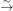
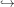
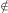

Abelian varieties over algebraic number fields are indispensible tools in algebraic geometry and number theory. In this report, I give a brief introduction of abelian varieties and offer some deeper topics of interest.
Abelian varieties have the special property that their points form a group in such a way that the maps defining the group structure are given by morphisms. To give a proper definition of an abelian variety, we reintroduce a familiar definition of a group.
Definition 1. A group consists of a set G together with maps m : G × G → G (the group law), i : G → G (the inverse), and an identity element e ∈ G such that we have the following eqalities of maps:
(Associativity) m ∘ (m × idG) = m ∘ (idG × m) : G × G × G → G.
(Identity) m ∘ (e × idG) = j1 : {e}× G → G and m ∘ (idG × e) = j2 : G ×{e}→ G.
j1 and j2 are the canonical identifications {e}× G G and G ×{e} G, respectively. e is the inclusion map {e}G.
(Left and Right Inverse) e ∘ π = m ∘ (idG × i) ∘ ΔG = m ∘ (i × idG) ∘ ΔG : G → G.
π : G →{e} is the constant map and ΔG : G → G × G is the diagonal map.
Then, we define a group variety in a similar fashion.
Definition 2. A group variety over a field k is a k-variety X together with k-morphisms m : X × X → X (the group law), i : X → X (the inverse), and a k-rational point e ∈ X(k) (the identity element) such that we have the following equalities of morphisms.
(Associativity) m ∘ (m × idX) = m ∘ (idXG × m) : X × X × X → X.
(Identity) m ∘ (e × idX) = j1 : Spec(k) × X → X and m ∘ (idX × e) = j2 : X × Spec(k) → X.
j1 and j2 are the canonical identifications Spec(k) × X X and X × Spec(k) X, respectively.
(Left and Right Inverse) e ∘ π = m ∘ (idX × i) ∘ ΔX∕k = m ∘ (i × idX) ∘ ΔX∕k : X → X.
π : X → Spec(k) is the structure morphism.
[GM]
Definition 3. An abelian variety X is a group variety that is complete. In other words, X is a group variety with the property that for any variety Y , the projection X × Y → Y is a closed morphism.
Remark. A group variety is complete if it is a projective variety.
We are hoping these abelian varieties are commutative. We will prove this by way of the rigidity lemma.
Lemma 4 (Rigidity Lemma). Let X be a complete variety, Y and Z any varieties, and f : X × Y → Z a morphism such that for some y0 ∈ Y,f(X ×{y0}) is a single point z0 of Z. Then, there is a morphism g : Y → Z such that if p2 : X × Y → Y is the projection, f = g ∘ p2. [Mum85]
Proof. For any point x0 ∈ X, define g : Y → Z by g(y) = f(x0,y). Let U be an affine open neighborhood of z0 in Z, F = Z -U, and G = p2(f-1(F)). Then, G is closed in Y since X is complete, so p2 is a closed map. Since y0G, Y -G = V is non-empty open subset of Y . For each y ∈ V , the complete variety X ×{y} gets mapped by f into the affine variety U, and so it gets mapped into a single point of U. Therefore, for any x ∈ X,y ∈ V,f(x,y) = f(x0,y) = g ∘ p2(x,y). __
Corollary 5. If X and Y are abelian varieties and f : X → Y is any morphism, f(x) = h(x) + a where h is a homomorphism of X into Y and a ∈ Y .
Proof. Let f = f - f(0) and assume that f(0) = 0. Consider the morphism ϕ : X × X → Y defined by ϕ(x,y) = f(x+y)-f(y)-f(x). Then, ϕ(X ×{0}) = ϕ({0}×X) = 0. By the rigidity lemma, ϕ is equivalent to 0 on X × X, and so f must be a homomorphism. __
Proof. The morphism of X into itself mapping each element onto its inverse is a homomorphism by Corollary 1. For x,y ∈ X,(xy)-1 = x-1y-1 = y-1x-1. __
Now, we have the tools to prove the following theorem (although I omit the proof here. See page 45 of [Mum85].)
Theorem 7. Let X be a complete variety, e ∈ X a point, and
a morphism such taht m(x,e) = m(e,x) = x for all x ∈ X. Then, X is an abelian variety with group law m and identity e.
From here, it is natural to study divisors on abelian varieties for the purpose of showing that abelian varieties are indeed projective. Some important tools for this result are the theorem of the square and the see-saw principle (see chapter 2 of [GM]). Rather than diving deeper into the theory, let’s look at a classic example of an abelian variety.
As Hartshorne puts it, ”the theory of elliptic curves is varied and rich, and provides a good example of the profound connections between abstract algebraic geometry, complex analysis, and number theory,” [Har77]. In this section, we show that elliptic curves are abelian varieties by deriving the rational maps (through Sage) that define the group law.
The group law for an elliptic curve defined by a Weierstrass equation is given by the following rule [Sut21]:
For projective curves in Weierstrass form E : y2z = x3 + Axz2 + Bz3, we will take our distinguished point to be O = (0 : 1 : 0). Then, every point P = (x0 : y0 : 1) that’s not the distinguished point on the curve has a nonzero z-coordinate (scaled to 1). We find another point Q = (x0 : -y0 : 1) on the curve for which the line through P and Q is defined by x = x0z. O also lies on the line, we have three points P,Q,O that lie on a line:
Now, we check for the properties defined earlier.
(Associativity) See Andrew Sutherland’s Sage notebook for the algebraic proof.
(Identity) O is the identity element. Take any non-distinguished point P. Then, the line between O and P intersects the curve at -P: O + P + (-P) = O. Thus, O + P = P.
(Inverse) See above. For a point P on the curve, -P is its inverse.
I leave the proof for the reader. One must show that projective curves have genus 1, and the group operation on the abelian variety is the same as the one induced by the group law, taking the identity element as the distinguished point.
I have left off a portion on the algebraic theoy of abelian varieties concerning cohomology groups and the theorem of the cube. For this, I would read [Mum85].
There are plenty of directions to go following this material (after studying the above). The following are natural ideas to explore:
complex tori and their equivalence to abelian varieties
dual abelian varieties
Jacobian variety
moduli spaces of abelian varieties
complex multiplication of abelian varieties
elliptic modular curves
shimura varieties
Gerard van der Geer and Ben Moonen. Abelian Varieties. Preliminary Version of the First Chapters. url: https://www.math.ru.nl/~bmoonen/research.html#bookabvar.
Robin Hartshorne. Algebraic Geometry. Springer-Verlag Graduate Texts in Mathematics 52, 1977.
David Mumford. Algebraic Varieties. Oxford University Press, 1985.
Andrew Sutherland. 18.783 Elliptic Curves. Massachusetts Institute of Technology: MIT OpenCourseWare. License: Creative Commons BY-NC-SA, 2021.